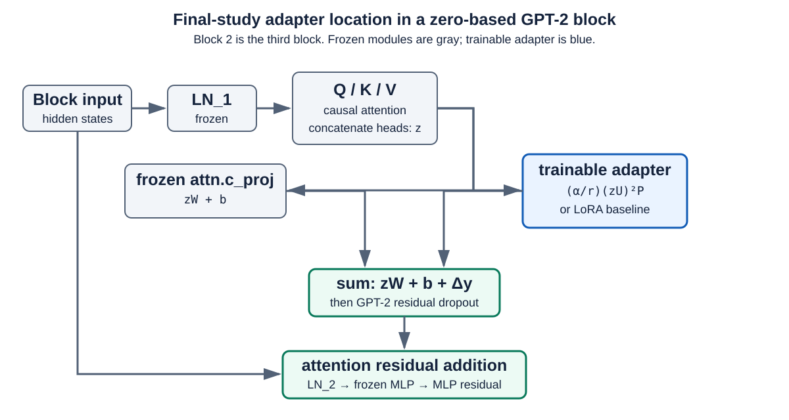

Research Project 01 · Methods
One frozen model, controlled corrections
The study uses causal language modeling to compare adapter functions while holding the pretrained backbone and core training protocol fixed within each matched experiment.
Model and insertion point
The backbone is Hugging Face gpt2 (GPT-2 Small, approximately 124M parameters): 12 Transformer blocks, hidden width 768, 12 attention heads, and MLP inner width 3,072. The GPT-2 tokenizer and pretrained weights are shared across conditions. Backbone parameters are frozen; only adapter matrices are trainable.
A GPT-2 block normalizes its input, computes Q/K/V projections and causal self-attention, concatenates the heads, and sends that output through attn.c_proj. The adapter wraps this frozen projection and adds Δy to its frozen output before the attention residual connection. The subsequent MLP remains frozen in the final long-run campaign.

mlp.c_fc, mlp.c_proj, and combined MLP placements. Those screens guided follow-up design but are distinct from the final 5,000-step attention-output experiment.Data, task, and evaluation
The corpus is WikiText-2 raw. Non-empty text from each public split is concatenated, tokenized with the GPT-2 tokenizer, and segmented into consecutive 128-token blocks. The task is causal language modeling: each token is predicted from preceding tokens, and the loss is cross-entropy over the block. Validation never updates weights. The public WikiText-2 test split is used only after the final configuration and checkpoint rule were fixed; it contains 2,213 consecutive 128-token blocks under the same preprocessing.
Loss is lower-is-better. Perplexity is exp(loss), so lower perplexity is also better. This is a focused language-modeling study; it does not establish transfer to another dataset, model family, or downstream task.
Training protocol
| Backbone | GPT-2 Small, frozen, FP16/autocast |
|---|---|
| Adapters | FP32 trainable matrices; zero-preserving output-factor initialization |
| Sequence / batch | 128 tokens / batch size 1 |
| Effective batch | Gradient accumulation 4 |
| Optimizer | AdamW, learning rate 3×10−4, gradient clipping 1.0 |
| Seeds | 42, 123, 456 |
| Validation | Recorded every 25 optimizer steps; endpoint and trajectory summaries reported |
| Final campaign | 5,000 optimizer steps; final step-5,000 checkpoint selected before test evaluation |
Stages and what each stage can support
Early screening (roughly 20–1,000 steps). These experiments tested whether adapters executed, remained stable, and were worth carrying forward. They include several quadratic families, placement screens, and single-seed fixed-budget screens. They are directional evidence, not the final comparison.
Three-seed 2,000-step studies. Parameter-matched, depth, and local-rank comparisons replicate selected conditions with three seeds. The 6,144- and 12,288-parameter studies are reported separately because they are different controlled budgets.
Final three-seed 5,000-step campaign. LoRA and Symmetric Quadratic each use 12,288 trainable parameters in three attn.c_proj geometries. This is the primary result page because it includes longer convergence traces, adapter-only checkpoints, and held-out test evaluation.
Sources: master experiment table; placement study; local-rank study; and final long-run aggregate table.
Checkpointing and reproducibility
The final campaign saves adapter-only checkpoints at 1,000, 2,000, 3,000, 4,000, and 5,000 steps plus a final checkpoint. A reload smoke test reconstructed the frozen pretrained model, reinserted adapters, loaded the checkpoint, and produced a maximum absolute logits error of 0.0 on the checked batch. Metadata validation rejects mismatched architecture, rank, layers, or module shapes before loading. Frozen GPT-2 weights are not duplicated in an adapter checkpoint.